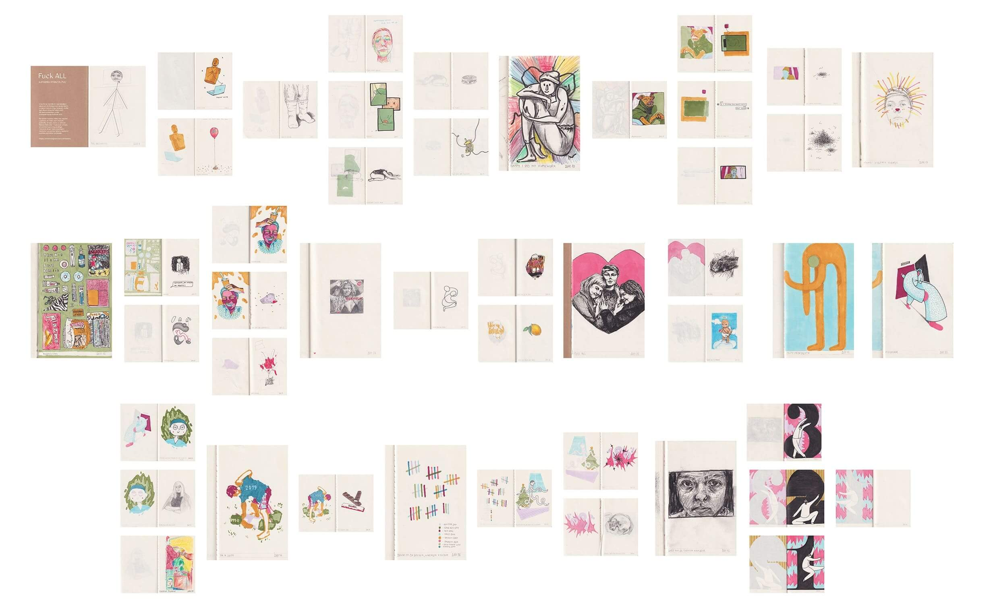
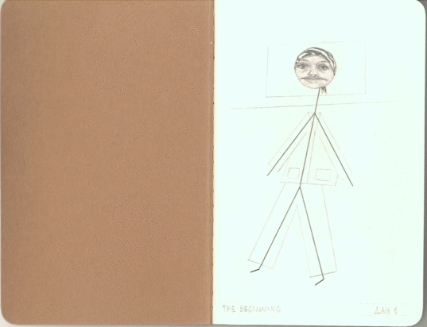
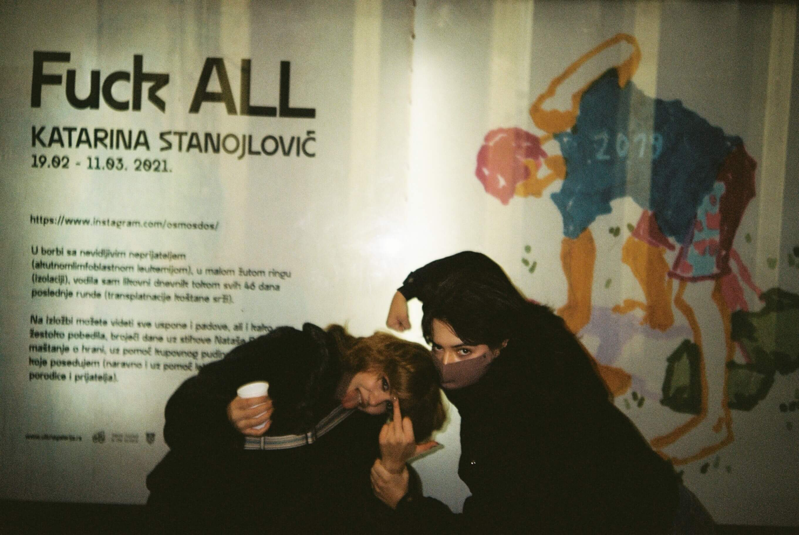

U borbi sa nevidljivim neprijateljem (akutnom limfoblastnom leukemijom),
u malom žutom ringu (izolaciji), vodila sam likovni dnevnik tokom svih
46 dana poslednje runde (transplatnacije koštane srži). U njemu možete videti sve uspone i padove, ali i kako sam žestoko pobedila, brojeći dane uz stihove Nataše Bekvalac i maštanje o hrani, uz pomoć kupovnog pudinga i ne puno stvari koje posedujem (naravno i uz pomoć lekara, sestara i podrške porodice i prijatelja).
Vizuelni dnevnik je bio izložen početkom 2021. u Uličnoj galeriji, u Beogradu.


